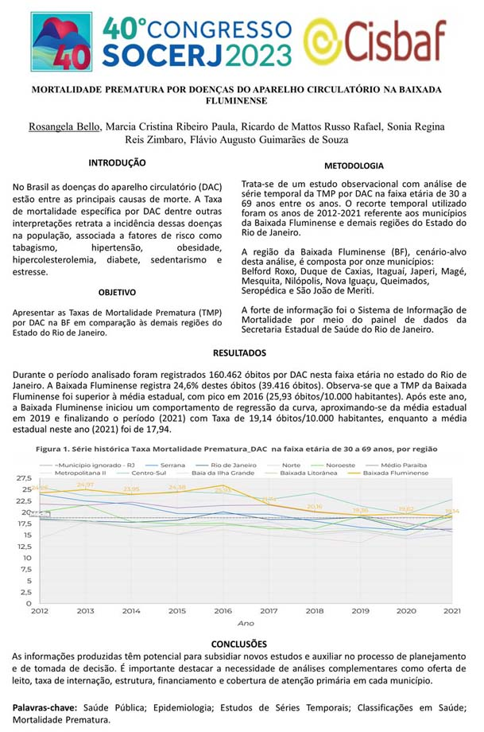

Publicações em Revistas e Periódicos

2020: COVID-19: monitoramento de síndromes respiratórias e
óbitos
domiciliares no Serviço de Atendimento Móvel de Urgência
2024: DISTRIBUIÇÃO ESPACIAL E FATORES ASSOCIADOS À MORTALIDADE
PREMATURA
POR DOENÇAS DO APARELHO CARDIOVASCULAR NOS MUNICÍPIOS DO RIO DE JANEIRO (2011-2022)
Mostra Estadual de Práticas de Saúde – CONSEMS RJ/IdeiaSUS-FIOCRUZ
Programa Mais Acesso à Especialistas e o fortalecimento da
regionalização no SUS

2023 - A EXPERIÊNCIA DO CISBAF NO PROCESSO DE QUALIFICAÇÃO DOS
TRABALHADORES NA BAIXADA FLUMINENSE
2024 - FORMAÇÃO NO SAMU DE QUEIMADOS: FORTALECENDO A EQUIPE E
AMPLIANDO A CAPACIDADE DE RESPOSTA
2025 - 5ª Mostra PROGRAMA MAIS ACESSO A ESPECIALISTAS E O
FORTALECIMENTO DA REGIONALIZAÇÃO DO SUS
Apresentação em Congressos e Seminários

2023 - 40° CONGRESSO SOCERJ 2023
2024 - 16º Congresso Internacional Rede Unida –
FORMAÇÃO NO SAMU DE QUEIMADOS: FORTALECENDO A EQUIPE E AMPLIANDO A CAPACIDADE DE RESPOSTA
2025 - Seminário Nacional de Consórcios Públicos e
Regionalização do SUS, organizado pelo Observatório do SUS e pela ENSP/Fiocruz